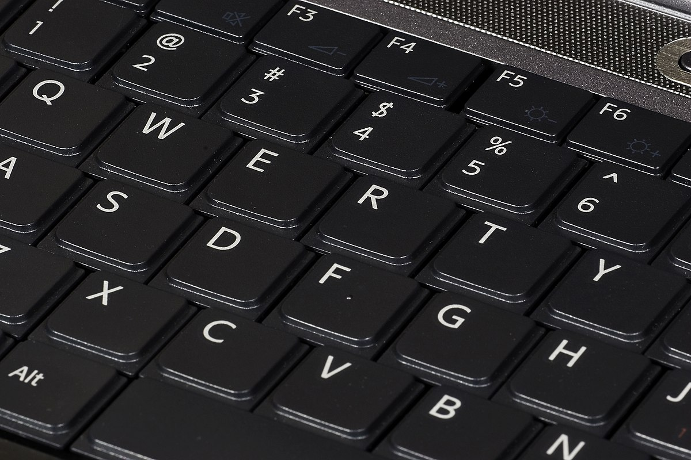

 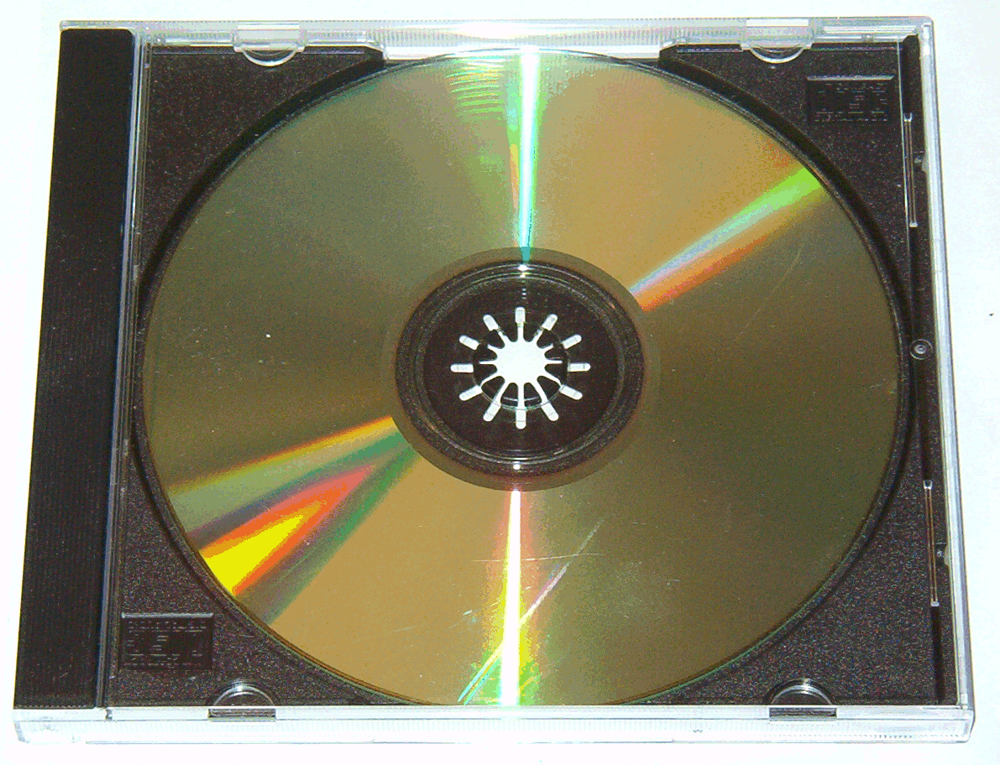
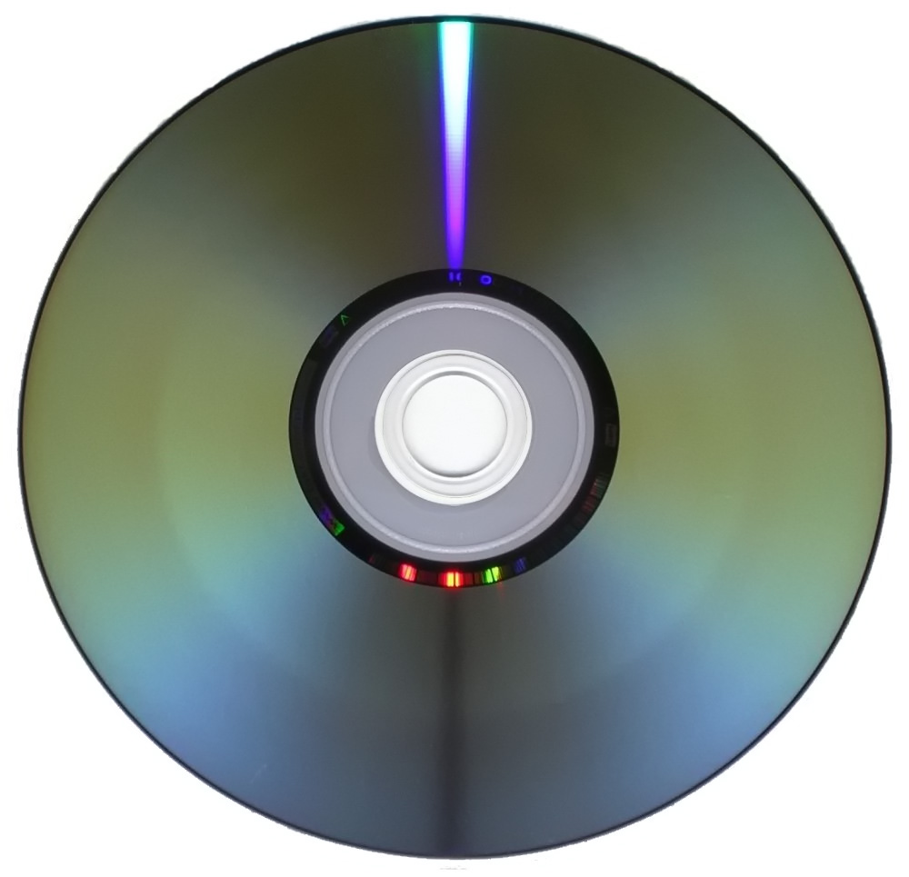
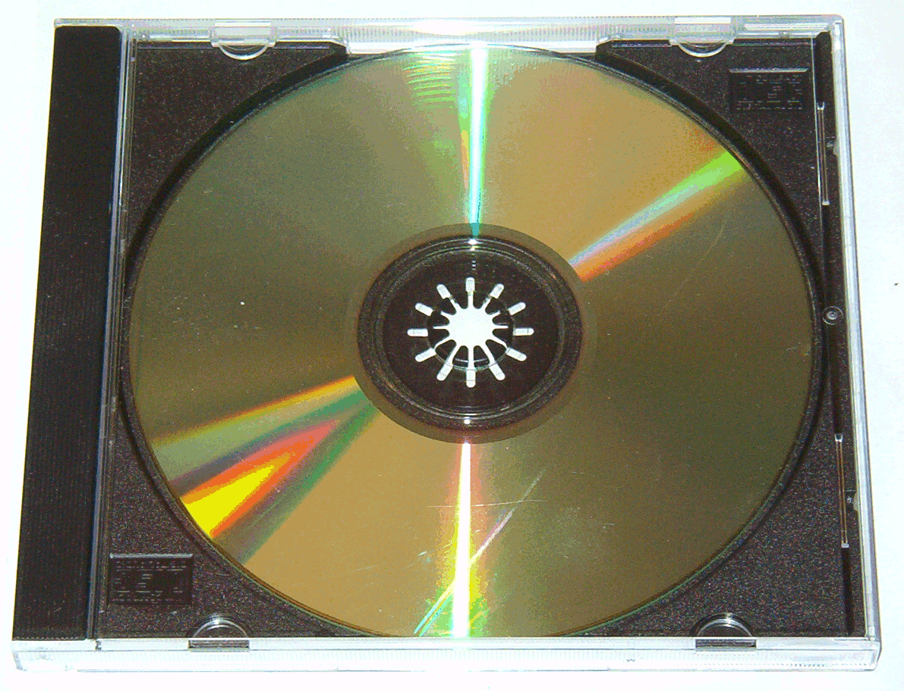
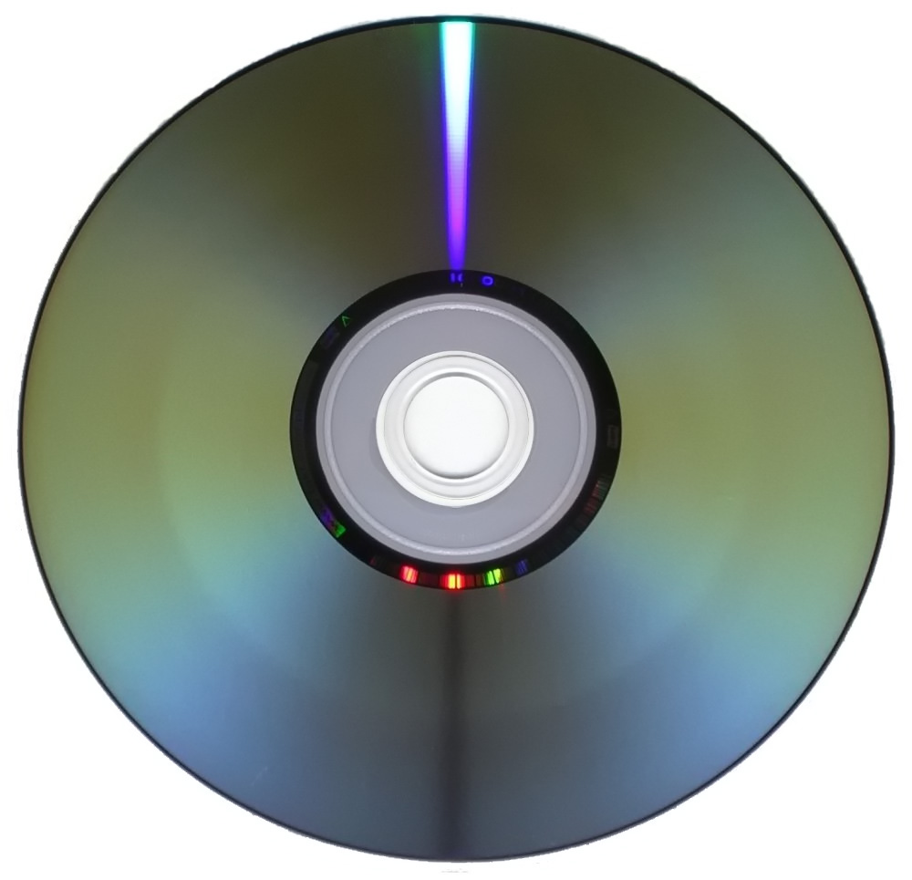
Както разбрахме от увода на първата страница компютърът се дели на системен блок и допълнителни устройства(периферни).
Периферни устройства (разделяни понякога на запаметяващи и входно-изходни устройства) е общ израз за всички спомагателни устройства, които увеличават функционалността на компютрите, като улесняват и разширяват връзката им с околния свят. Чрез тях се въвеждат и извеждат команди, информация и резултатите от изпълнението на зададените програми. Резултатите и информацията могат да се видят директно от човека или могат да бъдат препратени към друга машина, контролирана от компютъра: например принтер, факс, мрежови устройства за връзка с други компютри. В частния случай на робот крайното устройство е самият той.
Определянето на това дали едно устройство е входно или изходно зависи от гледната точка. Клавиатурата и мишката преобразуват физическите движения на потребителя във входни сигнали, разбираеми за компютъра; изходният сигнал на тези устройства представлява входен сигнал за компютъра. Подобно на тях, мониторите и принтерите приемат сигналите от компютъра като входни и ги превръщат във вид, разбираем за хората. От гледна точка на потребител човек, процесът на виждане и четене на техните резултати е входен сигнал. Взаимодействието между компютри и хора е предмет на дисциплината взаимодействие човек–компютър.
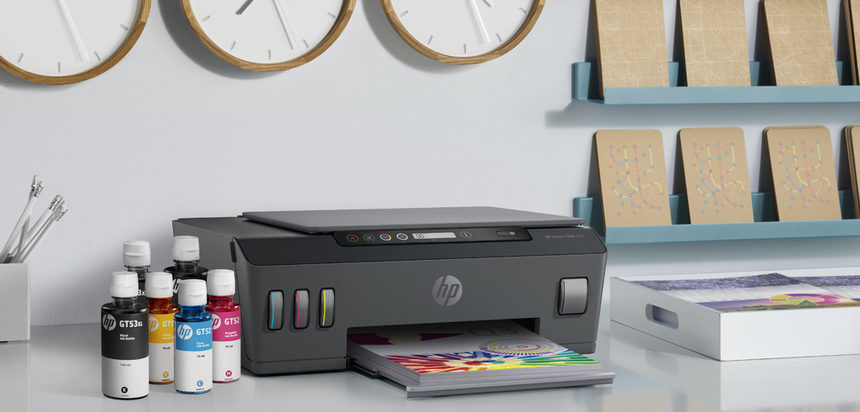 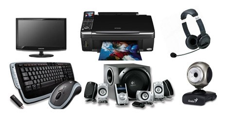 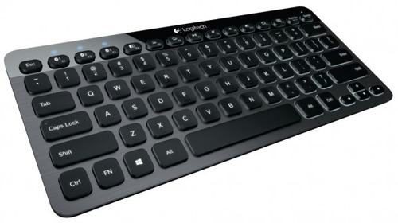 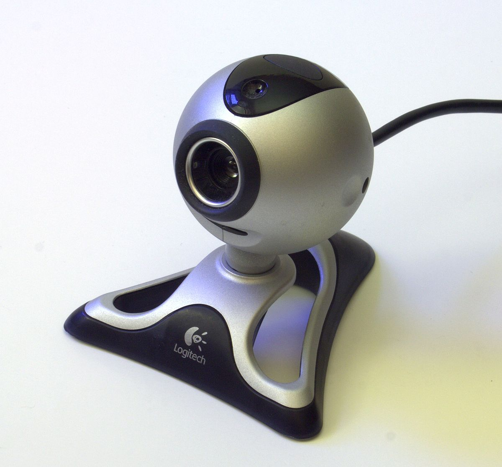 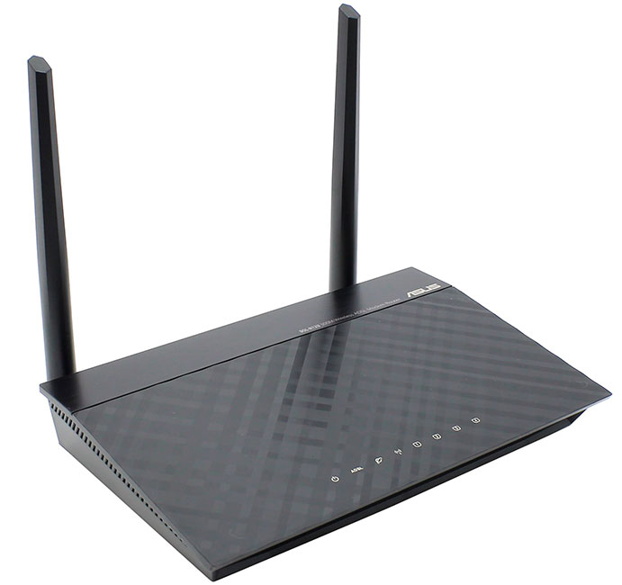
Първото поколение компютри са били оборудвани с много ограничен набор от периферни устройства. Въвеждането на инструкциите е ставало с перфокарти или перфолента, а извеждането на резултатите - с телетип или чрез отпечатване на принтер. Преди навлизането на персоналните компютри за периферни са се считали почти всички устройства, свързани с централния процесор и оперативната памет. С годините се добавят все по-нови периферни устройства и например при персоналния компютър основните входни устройства са вече клавиатурата и мишката, а изходните – мониторът и принтерът. Все по-често мониторът и твърдият диск не се считат за периферни устройства, тъй като в днешно време са необходими за повечето конфигурации. Почти всички сървъри обаче нямат монитори, защото обикновено се управляват от разстояние. Има и други устройства за въвеждане и извеждане на информация: таблети, факс-контролери, цифрови камери, микрофони, високоговорители.
Съществуват две основни групи периферни устройства: запаметяващи устройства като твърд диск, флопи-диск, компакт-диск, USB памет и други, които представляват сравнително бавна памет с голям капацитет, в които информацията се съхранява временно. Втората група са входно-изходните, включително и устройствата, свързани с осъществяването на достъп до компютърни мрежи. Възможността за обмен на данни между различни компютри открива широки възможности за разгръщане на приложението им. Глобалната мрежа Интернет позволява милиони компютри да комуникират помежду си.
Видове периферни устройства:
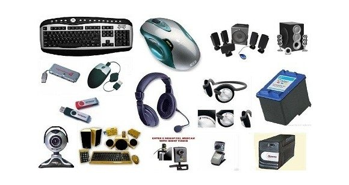 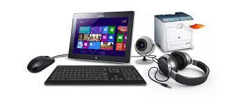 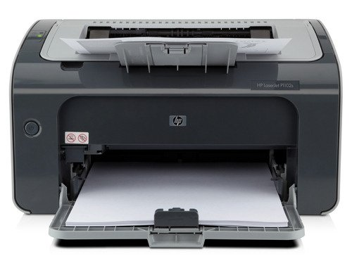 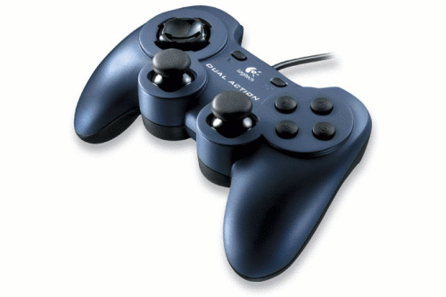 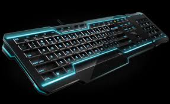